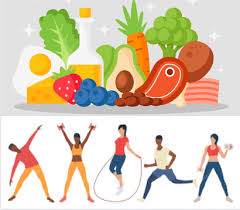
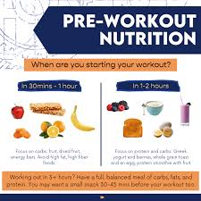
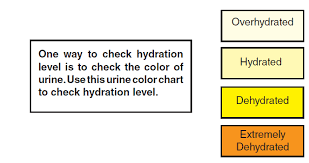
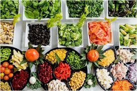

Nutrition Advice and Tips
Importance of Nutrition
Nutrition is essential for achieving fitness goals. Proper eating habits fuel your workouts, aid in recovery, and improve overall health. Below, we’ll explore tips to ensure you maintain a balanced diet.

1️⃣ Provides Energy for Workouts.
The body requires carbohydrates, proteins, and fats to fuel workouts.
Carbs provide quick energy, while fats supply long-term endurance.
Without proper nutrition, workouts may feel exhausting and ineffective.
2️⃣ Supports Muscle Growth & Repair
Protein is essential for muscle recovery and growth after exercise.
Foods rich in lean protein (chicken, fish, eggs, tofu, beans) help repair muscle tissues.
Amino acids from protein prevent muscle breakdown and support lean muscle mass.
3️⃣ Enhances Fat Loss & Weight Management
Balanced meals help regulate metabolism and burn fat efficiently.
A high-protein diet increases satiety, reducing unnecessary snacking.
Healthy fats (avocados, nuts, olive oil) promote weight loss while keeping hormones balanced.
4️⃣ Improves Recovery & Reduces Injuries
Proper post-workout nutrition replenishes energy and reduces muscle soreness.
Hydration (water, electrolytes) prevents cramps, fatigue, and injuries.
Anti-inflammatory foods (turmeric, ginger, leafy greens) help reduce joint pain and inflammation.
5️⃣ Boosts Immune System & Overall Health.
A strong immune system is crucial for consistent workouts and faster recovery.
Vitamins & minerals (Vitamin C, D, Iron, Zinc) support immunity.
Whole foods like fruits, vegetables, nuts, and seeds improve overall well-being, etc.
Pre-Workout Nutrition
Before working out, consume a mix of complex carbohydrates and proteins. This will provide the energy you need to stay active during your exercise.
Post-Workout Nutrition
After a workout, focus on replenishing glycogen stores and repairing muscles. Foods like lean protein and carbohydrates help with recovery.
 s
s
Hydration
Staying hydrated is critical for fitness. Drink plenty of water throughout the day and during your exercise sessions.
Long-Term Nutrition
A balanced diet includes lean proteins, whole grains, healthy fats, and plenty of fruits and vegetables. Avoid processed foods to support long-term health.
